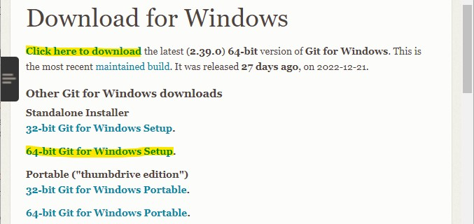
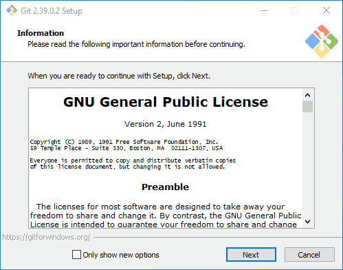
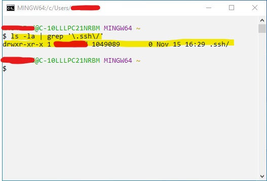

Git Bash on Windows for workshop attendees#
Important
This installation guide targets specifically those following one of the workshops we deliver. For a more throrough guide, please see [here] (resource pending)
How to install the Git Bash terminal on Windows#
Here we will be going through installing the Git Terminal on Windows. We will mostly be following the Carpentries installation guide found here, with some added support and further instructions
Download the Git Bash for Windows installer here (choose the standalone installer, 64-bit should work for most modern PCs)
Important
What follows in steps is largely copied from the Carpentries installation instructions with some minor tweaks to maintain consistency with current best practices []
Run the installer and follow the steps below (for clarity I have included an animated GIF of the process below, your installation will take longer than what is reflected in the GIF):
Click on “Next” four (this might be a different number depending on what version of Git for Windows his is) times (two times if you’ve previously installed Git). You don’t need to change anything in the Information, location, components, and start menu screens.
From the dropdown menu, “Choosing the default editor used by Git”, select “Use the Nano editor by default” (NOTE: you will need to scroll up to find it) and click on “Next”.
On the page that says “Adjusting the name of the initial branch in new repositories”, ensure that “Override the default branch name for new repositories” is selected. This will ensure the highest level of compatibility for our lessons.
Note
The initial and top-copy branch name
masteris now being phased out in favour ofmain. If you are following best practices, and one of the workshops we deliver, it is important that you choose Override the default branch name for new repositoriesEnsure that “Git from the command line and also from 3rd-party software” is selected and click on “Next”. (If you don’t do this Git Bash will not work properly, requiring you to remove the Git Bash installation, re-run the installer and to select the “Git from the command line and also from 3rd-party software” option.)
Select “Use bundled OpenSSH”.
Ensure that “Use the native Windows Secure Channel Library” is selected and click on “Next”.
Ensure that “Checkout Windows-style, commit Unix-style line endings” is selected and click on “Next”
Ensure that “Use Windows’ default console window” is selected and click on “Next”.
Ensure that “Default (fast-forward or merge)” is selected and click “Next”
Ensure that “Git Credential Manager” is selected and click on “Next”.
Ensure that “Enable file system caching” is selected and click on “Next”.
Click on “Install”.
Click on “Finish” or “Next”.

Check your install#
Check that everything was installed correctly:
Open up Git Bash by clicking on Start () or search (
 ) and type “Git Bash”
) and type “Git Bash”Once Git Bash starts up type in the following commands to check that things are running smoothly:
Home directory
echo $HOME
you should get
/c/Users/<your-username>
in response
Shell type
echo $SHELL
you should get
/usr/bin/bash
in response
Now, let’s check your Git commit editor is set up properly:
Git commit editor
git config --global --get core.editor
if you get anything other than no response the type in the following:
git config --global core.editor nano -w
Let’s open up the config file in the default editor (
nano) to check things are running smoothly:Open config file in default editor
Type in the following:
git config --global -e
you should get a prompt to wait, after a few seconds the nano editor will then open up with your global configuration file. We’ve not set anything up yet so your configuration file might be blank. Press ctrl-X to exit.
Note
We will be setting our preferred editor in-lesson, so you will be able to choose your favourite!
Just this one final step and you’ll be all set to follow along:
Check SSH Key Generator is installed in Git Bash
Type
ssh-keygen --help
If the response is the help menu then you’re all set!
(Optional) Check if you have SSH Keys already set up
Check for any pre-existing SSH Keys
Type
ls -la | grep '\.ssh\/'
in Git Bash
if the response is something like this then you do have pre-existing SSH Keys (don’t worry we will be setting keys for GitHub authentication in lesson!)
